class: middle, title background-image: url(assets/img/bg.png) background-size: cover count: false .col-md-4.text-right[ ] .col-md-8.text-center[ </br> </br> .small[présenté par] </br> </br> Steve Vissault, .small[(M.Sc)] [Chaire de recherche en Écologie Intégrative](https://ielab.recherche.usherbrooke.ca) [Université de Sherbrooke](https://www.usherbrooke.ca) </br> </br> .small[25 septembre 2017] ] --- class: middle # Des protocoles du MFFP vers un entrepot de données .col-md-4.text-right[ 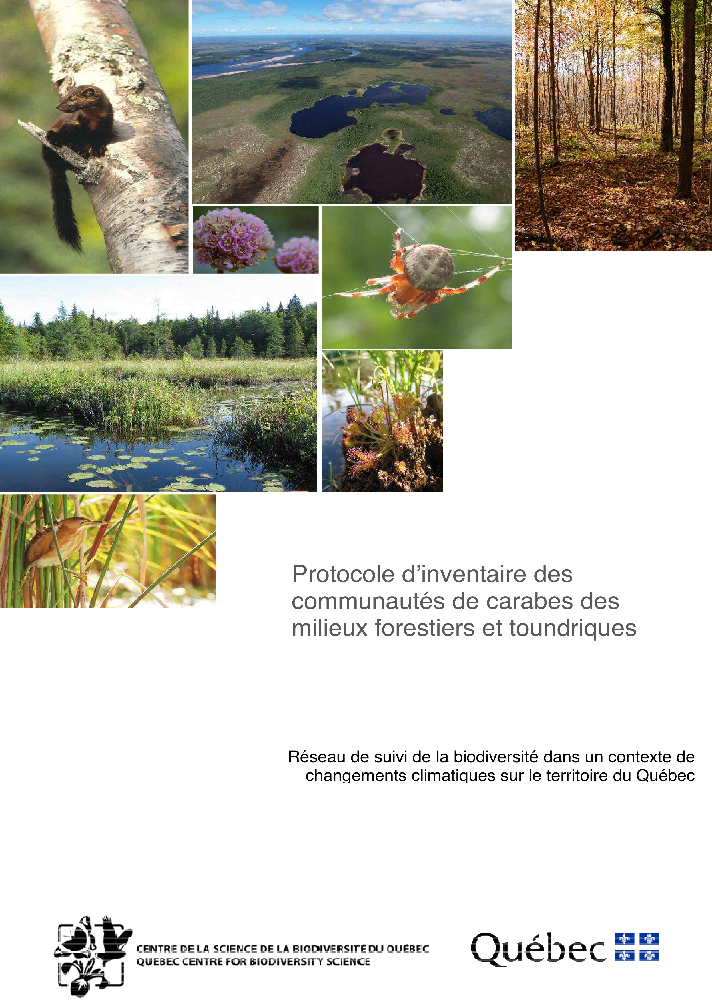 ] ## Démarche .col-md-8.text-justify[ - En partant des **types d'inventaires**, on a dressé la liste des types de données récoltées. - 7 différents types d'inventaires: végétation, sol, carabes, phénologie végétale, mésocarnivores, papillons, odonates. ] --- class: middle # Des protocoles du MFFP vers un entrepot de données .col-md-4.text-right[ ] .col-md-8.text-justify[ ## Sémantique utilisée dans la DB - **Sites d'inventaire** (lieu géographique constant) appartenant à une cellule - 3 types: Milieux aquatiques, humides, terrestres - **Campagne d'inventaire** (durée dans le temps): les 7 différents types d'inventaires - **Observations** liées à une campagne (observation sur le sol, la phénologie ou les espèces) - **Médias**: Fichiers de différentes formes (photos, bandes acoustiques, shapefiles) qui peuvent être liés à un site, une campagne, une observation. ] ??? Les médias permettent de documenter le protocole, appuyer une observation --- class: middle # Des protocoles du MFFP vers un entrepot de données .col-md-12.text-justify[ ## Objectifs de l'entrepot de données - Entreposer les données des inventaires biotiques et abiotiques. - Archiver les bandes sonores des suivis acoustiques ainsi que les photos prises pour l'inventaire de mésocarnivores. - Archiver les médias supplémentaires (photos du site, Textures de sol etc.) - Garder une flexibilité dans la conception pour éventuellement ajouter de nouveaux types de campagnes (eg. amphibiens et reptiles). ] --- # Structure global de la BD .col-md-12[ ## En résumé - 17 tables - 201 champs/colonnes - 22 relations entre les tables (intégrité relationnelle) ] .col-md-12.text-justify[ 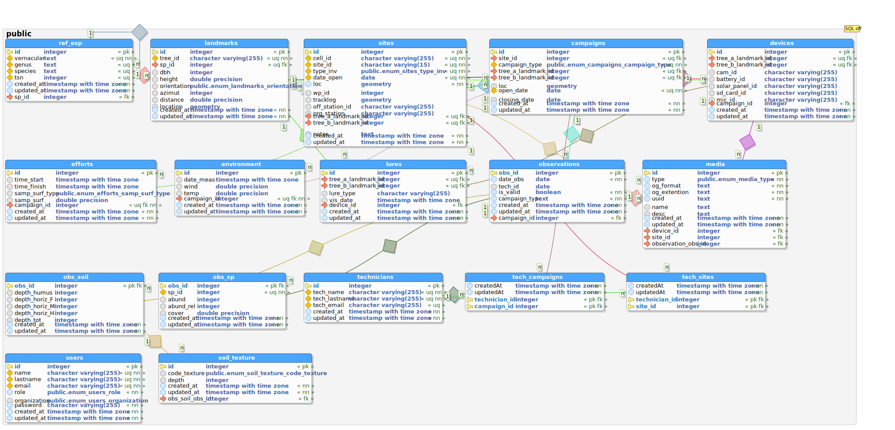 ] --- class: middle, transition # Défi #1: Essayer de trouver un format de stockage adéquat pour l'ensemble des types d'inventaires. --- # Structure de la BD ## La solution dans le coeur de la base de données .col-md-12.text-justify[ 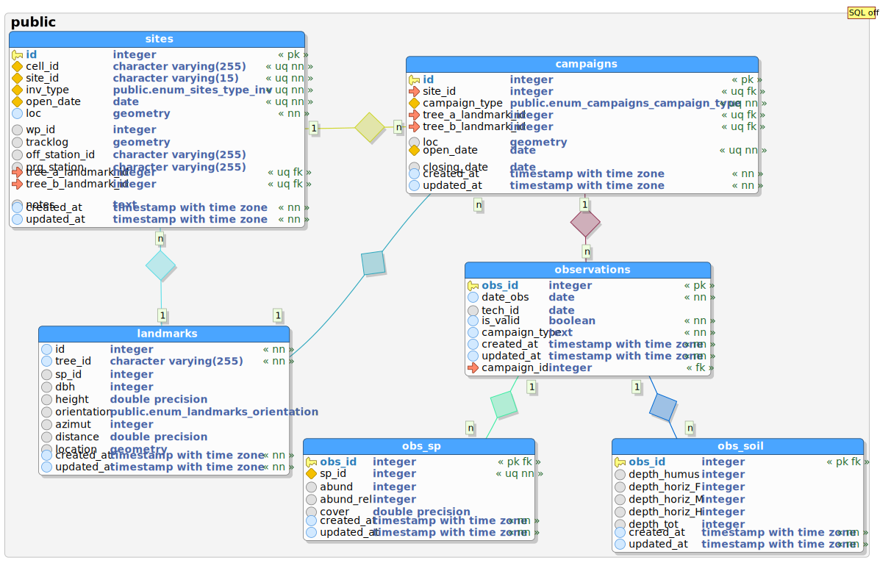 ] ??? - Pour garder un certains controle sur la qualité de la données. - La données peut être valide ou invalide (la valeur par défault: invalide?) - À chaque campagne est lié un effort d'échantillonnage et parfois des données descriptives sur la météorologie. --- class: middle, transition .col-md-12.text-justify[ # Défi #2: Certaines données d'inventaires sont asynchrones. *Par exemple, analyse des photos pour un ajout ultérieur de ou des observations* .col-md-6[ 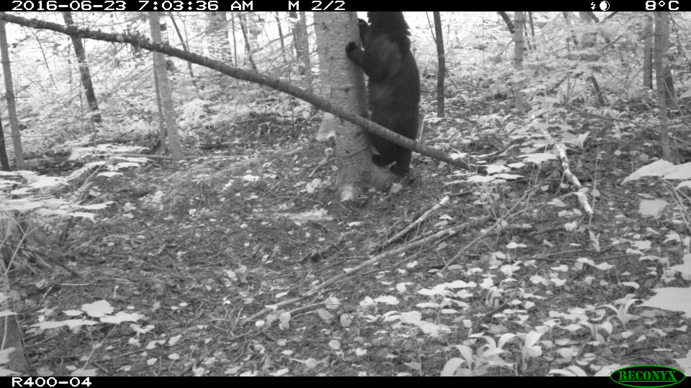 ] .col-md-6[ 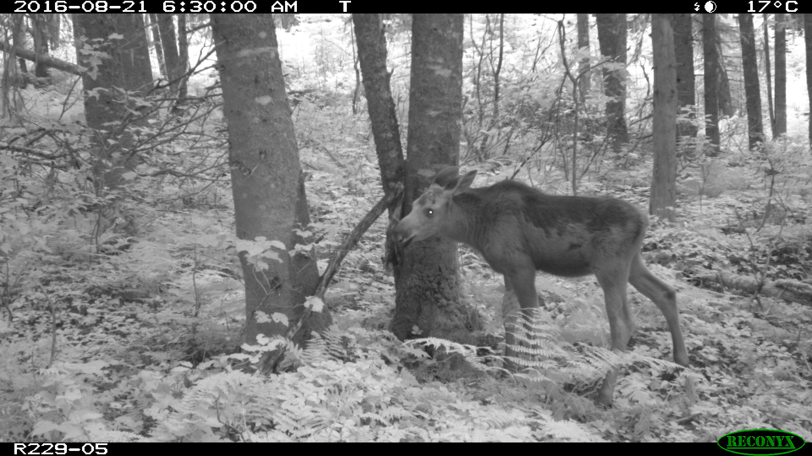 ] ] --- # Structure de la BD ## Les médias .col-md-12.text-justify[ 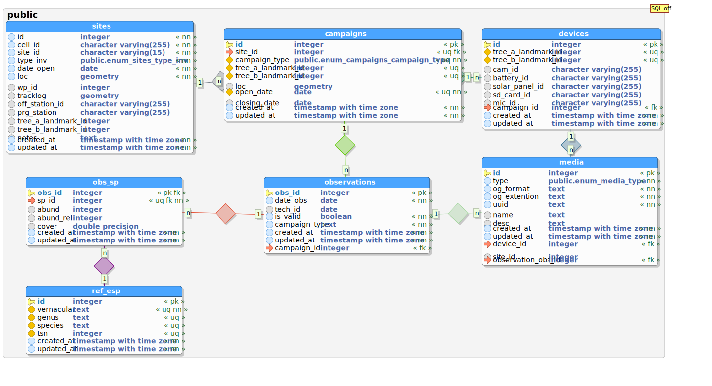 ] --- class: transition, middle # Comment interroger la base de données? --- # Vue d'ensemble de Coléo ## L'API .col-md-12.text-justify[ 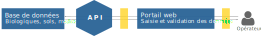 ] .col-md-12[ - L'API web permet d'échanger l'information (ressources) entre la base de données et un client (e.g. le portail) - La ressource peut être vue comme une table de la base de données - Exemple: [https://test01.dgravel.genap.ca/api/v0/site_infos](https://test01.dgravel.genap.ca/api/v0/site_infos) - On peut éditer, insérer, supprimer, sélectionner à la ressource `site_infos` ] ??? Protocole d'échange de données Expose des ressources Une ressource est un adresse URL qui pointe vers une table de la base de données On peut effectuer plusieurs opérations sur une ressources (éditer, insérer, supprimer, séléctionner) --- # Vue d'ensemble de Coléo ## Les différents acteurs du suivi BdQc .col-md-12.text-justify[ 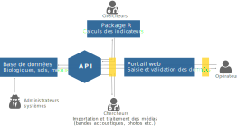 ] --- # Vue d'ensemble de Coléo ## La sécurité .col-md-12.text-justify[ 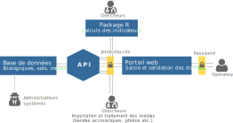 ] ??? L'accès est sécurisé par un jeton d'accès Chaque utilisateurs validé par l'administrateur dispose de son propre jeton d'accès --- class: middle, transition # Présentation du portail ## https://test01.dgravel.genap.ca/portal --- class: middle, transition # Présentation de l'API ## https://test01.dgravel.genap.ca/api/v0/site_infos <!-- # Discussion - Quelles sont les priorités de développement? - Package pour le calcul des indicateurs ou Portail web - Arrimage local ou distant des base de données du ministère? - Quelles sont les besoins pour cette session? - Arrimage avec l'équipe de Raphaël Proulx - Est-ce qu'on aurait d'éventuels problèmes avec le service informatique? - Échéancier --> --- # Prochaines étapes 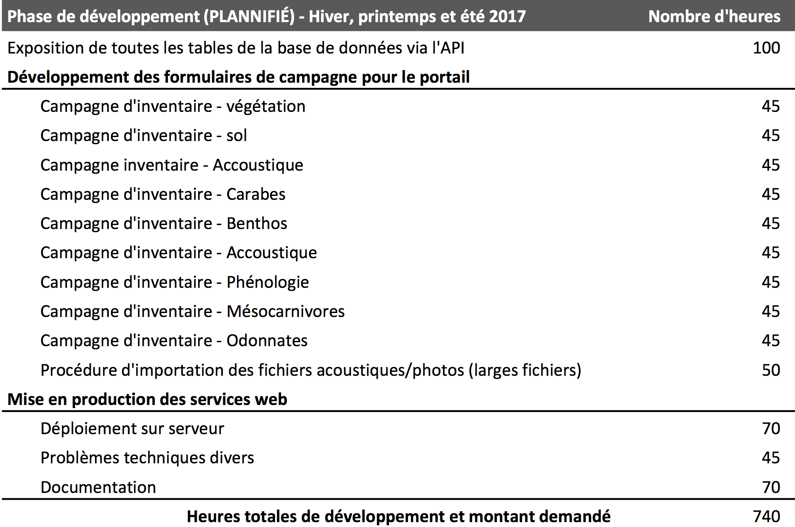 --- # Prochaines étapes 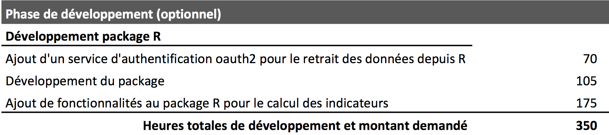